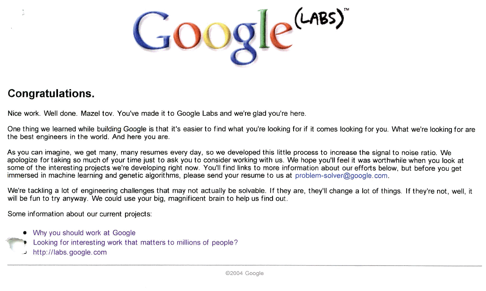

課題:Google Recruit
e(自然対数の底)の値で連続する10桁の数のうち，最初の素数をrubyで求めよ．ただし，e(自然対数の底)は200桁までで
2.71828182845904523536028747135266249775
7247093699959574966967627724076630353547
5945713821785251664274274663919320030599
2181741359662904357290033429526059563073
81323286279434907632338298807531952510190
である．これをテキストにコピーして読みこませよ．
解説
グーグル、謎の人材募集広告--シリコンバレーのビルボードに
Stefanie Olsen (CNET News.com) 2004/07/12 08:40
先週、シリコンバレーの中心を走るハイウェー101沿いのビルボードに、複雑な数学の問題を載せた広告が現れた。
(中略)
この広告には、「eの値中の、最初の連続する10桁の素数.com」("10 digit prime found in consecutive digits e.com." )と書かれている。この答えの「7427466391.com」にアクセスすると、そのウェブページにはさらに別の問題(下記参照)が用意されているが、ここにもGoogleが関与していることを示すものは全くない。 この問題を解くと、Googleの研究開発部門「Google Labs」へのページに辿りつく。このページには、「Googleの構築を通して我々が学んだことの1つに、自分が何かを探しているとき、向こうも自分を探している場合のほうが見つかりやすいということがある。我々が探しているのは、世界最高のエンジニアであり、あなたこそその人なのだ」と書かれている。

解法
各個撃破(あるいは分割統治)で解いて行く．おおまかな流れは，
- eの値中の、連続する10桁の数
- 数の読み込み
- 10桁の整数の生成
- 素数判定
- 最初の連続する10桁の素数を捜す
である．
ヒント１：expの読み込み
テキストの読み込みは，
[BobsNewPBG4-6:~/Ruby/google] bob% cat google.rb
exp1=gets.to_s.chomp
puts exp1
[BobsNewPBG4-6:~/Ruby/google] bob% ruby google.rb < exp.txt
2.71828182845904523536028747...
exp.txtの内容を"<"で読み込ませている．
ヒント２：文字から数字の表示
文字列exp1を配列とみなしてexp1[0]として表示させようとすると失敗する．ここで出てくるのはasciiコードの番号．そこで，chrで表示させる．
[BobsNewPBG4-6:~/Ruby/google] bob% cat google2.rb
exp1=gets.to_s.chomp
puts exp1
puts exp1[0]
puts exp1[1]
puts exp1[2].chr
puts exp1[3].chr.to_i
puts exp1[3..12].to_i
[BobsNewPBG4-6:~/Ruby/google] bob% ruby google2.rb < exp.txt
2.71828182845904523536028747135266...
50
46
7
1
1828182845
もっと簡単には最後のputs exp1[3..12].to_i でいいが，これは後の問題でつかえないのでもうすこしちまちま作る．
ヒント３：素数判定の高速化
素数判定programのloopの範囲2..i_maxにおいて，i_max=nではなく，i_max=Math::sqrt(n)にすれば高速化される．なぜか考えよ．
time ruby Google.rb < exp.txt
99:7427466391
123:7413596629
149:6059563073
171:3490763233
182:2988075319
0.862u 0.007s 0:00.87 98.8% 0+0k 0+0io 0pf+0w
３章あるいは４章で作った，2..nのloopでは終わらない．
類題
Congratulations. You've made it to level 2. Go to www.Linux.org and enter Bobsyouruncle as the login and the answer to this equation as the password.
f(1)=7182818284
f(2)=8182845904
f(3)=8747135266
f(4)=7427466391
f(5)=__________